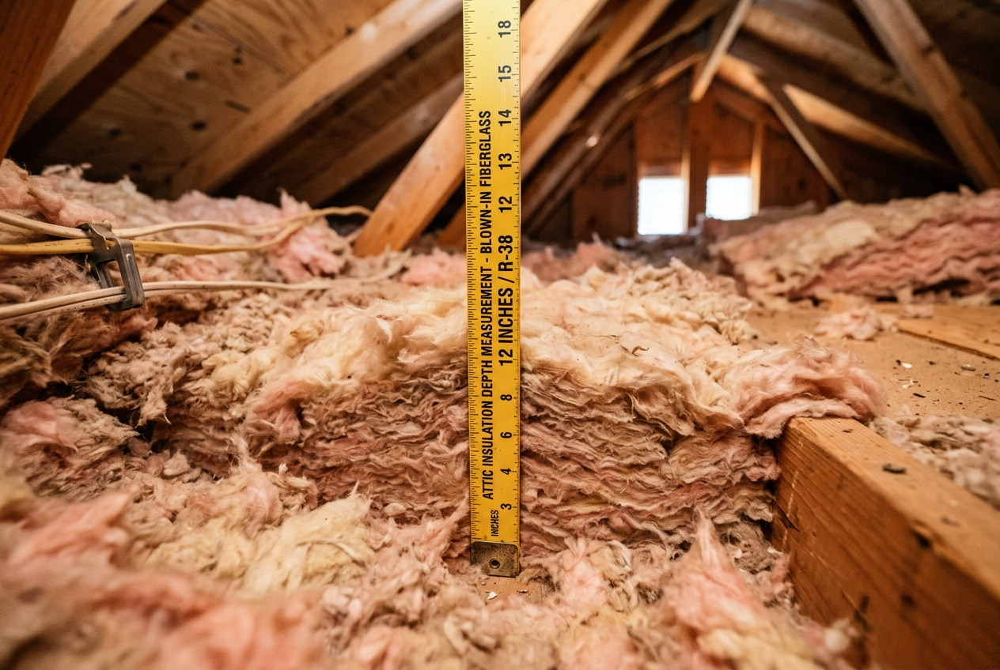
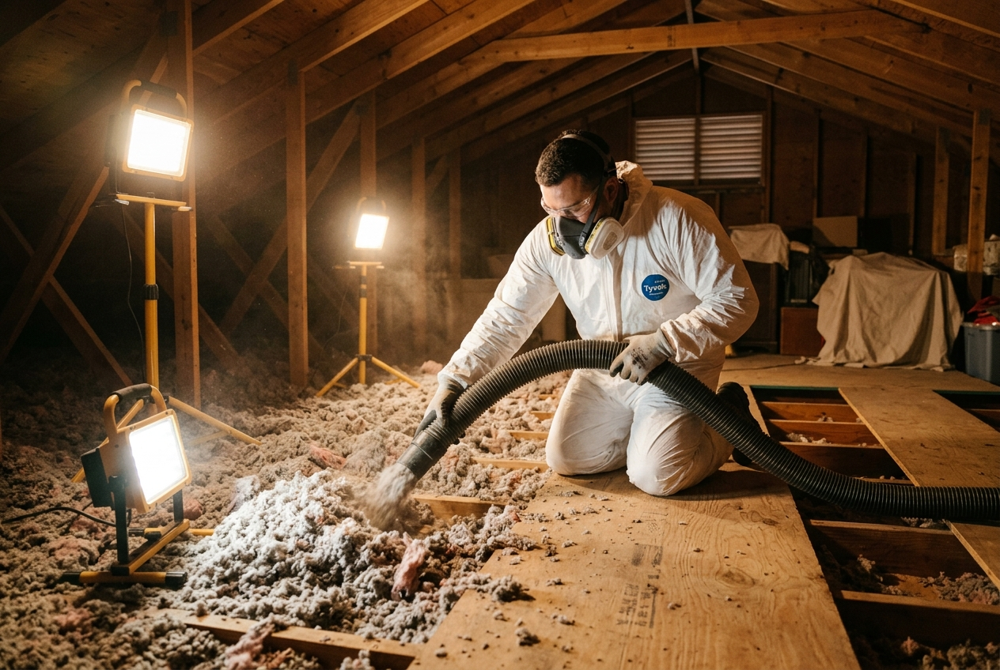

Three signs point directly to the attic: your upstairs rooms stay noticeably hotter than downstairs even with the AC set low; your AC runs more than 10–11 hours per day during Houston summers; or you can see the wooden floor joists in your attic, which means insulation depth is under 3 inches and you're well below R-30. A free inspection confirms the exact current R-value and shows what an upgrade would cost before you decide anything.
Attic Insulation in Spring, TX
Most Spring homes built before 2000 — in Klein, Northgate Forest, Champions, and Spring Creek Oaks — still have their original R-11 to R-19 fiberglass. Houston summers push attic temperatures to 135–140°F, and that insulation isn't close to enough. If your AC runs constantly and upstairs rooms stay hot, the attic is the first place to look. Our shop is in Tomball on Hwy 249 — we're your closest local insulation contractor.
- 35–45 yrs
- age of insulation in most Klein and Northgate Forest homes — well past its useful life
- 138°F
- peak July attic temperature measured in uninsulated Spring TX homes
- R-38
- DOE minimum for IECC Climate Zone 2A — most Spring homes are at R-9 to R-16 today
- 8 miles
- from our Tomball shop on Hwy 249 to Klein High School — we're the closest crew to you
Why Spring TX Homes Struggle With Summer Heat
Spring developed rapidly from the late 1970s through the mid-2000s. The Klein and Northgate Forest areas, built primarily between 1978 and 1990, were insulated to codes requiring only R-11 to R-13 in attics. The FM 2920 and Spring Cypress corridor subdivisions from the late 1980s through mid-1990s typically received R-19. Even R-19 is less than half of the R-38 minimum the Department of Energy recommends for Houston's climate today.
After 25 to 45 years, that fiberglass has compressed. An attic that started at R-19 now performs closer to R-12 in many Spring homes. On a July afternoon, your attic reaches 135–140°F. Your AC works against that heat load every hour — which is why June, July, and August energy bills in many Spring homes regularly hit $300–$400.
- Klein / Northgate Forest
1978–1990 builds — our highest call volume in Spring. Original R-11 now settling at R-7 to R-9. - Champions / Windrose
Two-story 1988–2000 homes. Second floor averages 6–8°F hotter than ground floor with original insulation intact. - Spring Creek Oaks / FM 2920 corridor
1985–1995 construction wave. Insulation in its 30th–40th year of compressing — R-19 original, R-12 to R-14 today. - Gleannloch Farms / Auburn Lakes
Newer master-planned builds from the late 1990s. Started at R-19 to R-30 — still 8–19 points short of the DOE minimum.
What Spring Homeowners Tell Us When They Call
- Upstairs bedrooms won't cool down past 9pm: The second floor sits closest to the roof. In Klein and Champions homes where two-story builds are common, this is one of the most reported complaints we hear — even with the thermostat set to 72°F.
- Energy bills over $320/month from June through September: A 2,000 sq ft Spring home with R-13 attic insulation typically spends $300–$380/month cooling in peak summer. After upgrading to R-38, most homeowners report bills dropping to $190–$250 — savings of $100–$130/month.
- AC running 11–14 hours per day: A properly insulated Spring home needs roughly 8–10 hours of runtime on a 96°F day. Anything beyond that points to the attic as the primary heat source.
- Visible floor joists in the attic: If you can see the wooden joists when you look into your attic, your insulation depth is below 3 inches — meaning you're operating at R-9 or less, less than a quarter of what's recommended for this climate.
Insulation Services We Install in Spring TX
We inspect first, then recommend the right solution for your home's age, layout, and budget. Every job includes air sealing before insulation is added.

Blown-In Fiberglass Insulation The most cost-effective upgrade for Spring attics. Blown-in fiberglass covers every corner of the attic floor — around wires, pipes, and ductwork — bringing most Spring homes from R-13 or R-19 up to R-38 in a single visit. Starting at $0.65/sq ft installed. Most jobs completed in one day. Learn more → Spray Foam Attic Encapsulation
Applied under the roof deck rather than the attic floor, spray foam brings the entire attic into conditioned space. This is the right choice when your HVAC equipment sits in the attic — it eliminates duct losses that account for 20–30% of cooling waste in many Spring homes. Open-cell from $1.20/sq ft; closed-cell from $2.20/sq ft.
Learn more →
Spray Foam Attic Encapsulation
Applied under the roof deck rather than the attic floor, spray foam brings the entire attic into conditioned space. This is the right choice when your HVAC equipment sits in the attic — it eliminates duct losses that account for 20–30% of cooling waste in many Spring homes. Open-cell from $1.20/sq ft; closed-cell from $2.20/sq ft.
Learn more →
 Injection Foam Wall Insulation
For older brick homes in Klein and Northgate Forest with empty wall cavities. Injection foam fills the cavity through small holes drilled from the exterior — no drywall removal, no interior disruption. The only practical way to add R-value to existing walls in an occupied home.
Learn more →
Injection Foam Wall Insulation
For older brick homes in Klein and Northgate Forest with empty wall cavities. Injection foam fills the cavity through small holes drilled from the exterior — no drywall removal, no interior disruption. The only practical way to add R-value to existing walls in an occupied home.
Learn more →

Air Sealing Insulation slows heat — air sealing stops the drafts that bypass it entirely. We seal attic hatches, recessed light cans, plumbing penetrations, and HVAC boots before any insulation is installed. In Spring homes with cathedral ceilings or open can lights, skipping air sealing is the most common reason insulation upgrades underperform.Attic Insulation Cost in Spring TX — Real Numbers
Pricing transparency lets you make a confident decision before anyone sets foot in your attic. Here is what attic insulation actually costs in Spring TX:
| Service | Price per sq ft | Typical 1,800 sq ft Spring attic | Best for |
|---|---|---|---|
| Blown-in fiberglass (to R-38) | $0.65–$0.95 | $1,170–$1,710 | Most Spring homes — attic floor upgrade |
| Open-cell spray foam (roof deck) | $1.20–$1.85 | $2,160–$3,330 | Homes with attic HVAC equipment |
| Closed-cell spray foam (roof deck) | $2.20–$3.10 | $3,960–$5,580 | Maximum moisture and thermal control |
| Old insulation removal | $1.00–$2.00 | $1,800–$3,600 | Damaged, pest-contaminated, or wet insulation |
Prices cover materials and labor. Your written quote will itemize every line based on your attic's exact square footage, current insulation depth, access conditions, and whether removal is needed first.
Energy Savings You Can Expect in Spring
A Spring homeowner in a 2,000 sq ft home upgrading from R-13 to R-38 blown-in fiberglass typically sees monthly cooling costs drop by $100–$130 from June through September. At that rate, most projects pay for themselves within 2–4 years — before CenterPoint rebates or the federal tax credit are factored in.
CenterPoint Energy Rebates & Federal Tax Credits
Spring is served by CenterPoint Energy. Their Home Energy Efficiency Program offers rebates on qualifying insulation upgrades — we'll confirm current rebate amounts during your free inspection. The federal Inflation Reduction Act offers a tax credit of up to 30% of insulation costs (maximum $1,200) through 2032 for homeowners upgrading to the recommended R-value for their climate zone.
Spring TX Subdivision Insulation Guide — What Your Home Likely Has
Spring's housing stock spans nearly five decades of construction. The original insulation in each subdivision reflects the building codes of that era. Use this as a starting reference — your free inspection gives you the exact current R-value for your specific home.
| Subdivision / Area | Primary Build Era | Original R-Value | Likely R-Value Today | Recommended Upgrade |
|---|---|---|---|---|
| Klein, Northgate Forest | 1978–1988 | R-11 to R-13 | R-7 to R-10 | R-38 blown-in (priority) |
| Spring Creek Oaks, Cypresswood | 1985–1993 | R-13 to R-19 | R-9 to R-14 | R-38 blown-in |
| Champions, Windrose | 1988–2000 | R-19 | R-13 to R-16 | R-38 blown-in or spray foam |
| Gleannloch Farms, Auburn Lakes | 1993–2005 | R-19 to R-30 | R-15 to R-25 | R-38 top-up or spray foam |
| Harmony, Northgrove | 2005–2015 | R-30 to R-38 | R-22 to R-32 | R-49 top-up recommended |
R-values above are typical estimates based on era build codes. Actual settled R-value depends on original installation quality, attic ventilation, and any prior pest or moisture activity. A free inspection gives you the exact number.
Spring TX Homeowners Ask Us These Questions
Insulation removal in Spring TX typically costs $1.00–$2.00 per square foot. On a 1,800 sq ft attic floor, that runs $1,800–$3,600 for removal alone. Removal is only necessary when the existing insulation is water-damaged, rodent-contaminated, or so severely compressed that it would prevent new material from performing. Many Spring homes — especially in Gleannloch Farms and Auburn Lakes — have insulation in good enough condition to simply add on top without removing anything. We tell you honestly during the inspection.
For most Spring homeowners — especially in Klein, Northgate Forest, and Champions — blown-in fiberglass on the attic floor is the right call. It upgrades R-value quickly, costs 40–60% less than spray foam, and is sufficient for the majority of homes. Spray foam attic encapsulation under the roof deck makes more sense when your HVAC air handler sits in the attic (it brings the whole attic into conditioned space and eliminates duct losses), or when you want maximum moisture control. We inspect your attic first and tell you honestly which one fits your situation.
Yes — for most Spring homes built before 2000, upgrading from R-11 or R-19 to R-38 reduces cooling costs by 25–40% during peak summer months. On a $350/month July bill, that is $90–$140 in monthly savings. The payback period for a blown-in upgrade on a typical 1,800 sq ft attic runs 2–4 years at current energy prices. Homes that also air seal the attic floor penetrations typically see savings at the top end of that range.
Step 1: You call or submit the form — we schedule a free attic inspection, usually within 3–5 days. Step 2: A technician inspects your attic, measures the current R-value, checks ventilation and air leaks, and takes photos. Step 3: We present a written, itemized quote with the exact price for materials, labor, and any removal needed. Step 4: You approve the quote — or don't, zero pressure either way. Step 5: We schedule the installation, typically within 1–2 weeks; same-week scheduling is often available outside peak summer. Step 6: Most Spring jobs are done in one day. We use drop cloths, clean up completely, and walk you through the finished work before we leave.
How Close We Are to Your Neighborhood in Spring, TX
Our shop is in Tomball on Hwy 249 — a short drive from every Spring subdivision. Here's the real drive time from our office to your area.
Schedule Your Free Spring TX Attic Inspection
If your Spring home's upstairs rooms stay hot, your AC runs all day, or your energy bills have climbed every summer, your attic insulation is almost certainly the reason. Insulation Contractor Houston inspects at no charge, measures your current R-value, and gives you a written quote before any work begins.
What happens after you submit: Our team will call you within a few hours to schedule your free attic inspection. Most inspections take 30–45 minutes. You'll leave with your attic's exact R-value, photos of the current condition, and a written itemized quote in hand.
Last updated: October 2026